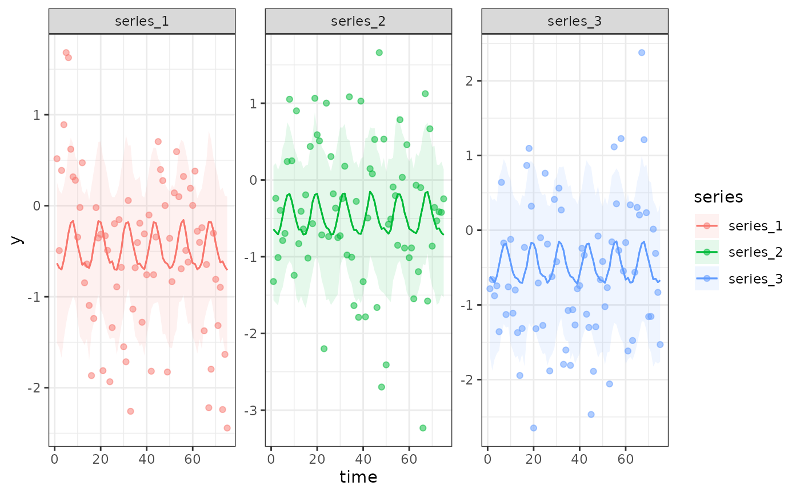
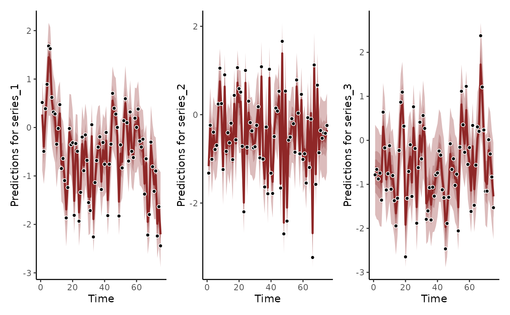

Predict from a fitted mvgam model
Arguments
- object
listobject of classmvgamorjsdgam. Seemvgam()- newdata
Optional
dataframeorlistof test data containing the same variables that were included in the originaldataused to fit the model. If not supplied, predictions are generated for the original observations used for the model fit.- data_test
Deprecated. Still works in place of
newdatabut users are recommended to usenewdatainstead for more seamless integration intoRworkflows- type
When this has the value
link(default) the linear predictor is calculated on the link scale. Ifexpectedis used, predictions reflect the expectation of the response (the mean) but ignore uncertainty in the observation process. Whenresponseis used, the predictions take uncertainty in the observation process into account to return predictions on the outcome scale. Whenvarianceis used, the variance of the response with respect to the mean (mean-variance relationship) is returned. Whentype = "terms", each component of the linear predictor is returned separately in the form of alist(possibly with standard errors, ifsummary = TRUE): this includes parametric model components, followed by each smooth component, but excludes any offset and any intercept. Two special cases are also allowed: typelatent_Nwill return the estimated latent abundances from an N-mixture distribution, while typedetectionwill return the estimated detection probability from an N-mixture distribution- process_error
Logical. If
TRUEand a dynamic trend model was fit, expected uncertainty in the process model is accounted for by using draws from a stationary, zero-centred multivariate Normal distribution using any estimated process variance-covariance parameters. IfFALSE, uncertainty in the latent trend component is ignored when calculating predictions- summary
Should summary statistics be returned instead of the raw values? Default is
TRUE..- robust
If
FALSE(the default) the mean is used as the measure of central tendency and the standard deviation as the measure of variability. IfTRUE, the median and the median absolute deviation (MAD) are applied instead. Only used ifsummaryisTRUE.- probs
The percentiles to be computed by the
quantilefunction. Only used ifsummaryisTRUE.- ...
Ignored
Value
Predicted values on the appropriate scale.
If summary = FALSE and type != "terms", the output is a matrix of
dimension n_draw x n_observations containing predicted values for each
posterior draw in object.
If summary = TRUE and type != "terms", the output is an
n_observations x E matrix. The number of summary statistics
E is equal to 2 + length(probs): The Estimate column
contains point estimates (either mean or median depending on argument
robust), while the Est.Error column contains uncertainty
estimates (either standard deviation or median absolute deviation depending
on argument robust). The remaining columns starting with Q
contain quantile estimates as specified via argument probs.
If type = "terms" and summary = FALSE, the output is a named list
containing a separate slot for each effect, with the effects returned as
matrices of dimension n_draw x 1. If summary = TRUE, the output
resembles that from predict.gam when using the call
predict.gam(object, type = "terms", se.fit = TRUE), where mean
contributions from each effect are returned in matrix form while standard
errors (representing the interval: (max(probs) - min(probs)) / 2) are
returned in a separate matrix
Details
Note that if your model included a latent temporal trend (i.e. if
you used something other than "None" for the trend_model argument), the
predictions returned by this function will ignore autocorrelation
coefficients or GP length scale coefficients by assuming the process is
stationary. This approach is similar to how predictions are computed from
other types of regression models that can include correlated residuals,
ultimately treating the temporal dynamics as random effect nuisance
parameters. The predict function is therefore more suited to
scenario-based posterior simulation from the GAM components of a
mvgam model, while the hindcast / forecast functions
hindcast.mvgam() and forecast.mvgam() are better suited to generate
predictions that respect the temporal dynamics of estimated latent trends
at the actual time points supplied in data and newdata.
Examples
# \donttest{
# Simulate 4 time series with hierarchical seasonality
# and independent AR1 dynamic processes
set.seed(123)
simdat <- sim_mvgam(
seasonality = 'hierarchical',
prop_trend = 0.75,
trend_model = AR(),
family = gaussian()
)
# Fit a model with shared seasonality
# and AR(1) dynamics
mod1 <- mvgam(
y ~ s(season, bs = 'cc', k = 6),
data = simdat$data_train,
family = gaussian(),
trend_model = AR(),
noncentred = TRUE,
chains = 2,
silent = 2
)
# Generate predictions against observed data
preds <- predict(
mod1,
summary = TRUE
)
head(preds)
#> Estimate Est.Error Q2.5 Q97.5
#> [1,] -0.6334763 0.09349808 -0.8096942 -0.4295295
#> [2,] -0.6334763 0.09349808 -0.8096942 -0.4295295
#> [3,] -0.6334763 0.09349808 -0.8096942 -0.4295295
#> [4,] -0.6939103 0.09055841 -0.8721786 -0.5170424
#> [5,] -0.6939103 0.09055841 -0.8721786 -0.5170424
#> [6,] -0.6939103 0.09055841 -0.8721786 -0.5170424
# Generate predictions against test data
preds <- predict(
mod1,
newdata = simdat$data_test,
summary = TRUE
)
head(preds)
#> Estimate Est.Error Q2.5 Q97.5
#> [1,] -0.6128726 0.1032278 -0.8126983 -0.4229781
#> [2,] -0.6128726 0.1032278 -0.8126983 -0.4229781
#> [3,] -0.6128726 0.1032278 -0.8126983 -0.4229781
#> [4,] -0.4635102 0.1112113 -0.6812183 -0.2475180
#> [5,] -0.4635102 0.1112113 -0.6812183 -0.2475180
#> [6,] -0.4635102 0.1112113 -0.6812183 -0.2475180
# Use plot_predictions(), which relies on predict()
# to more easily see how the latent AR(1) dynamics are
# being ignored when using predict()
plot_predictions(
mod1,
by = c('time', 'series', 'series'),
points = 0.5
)

# Using the hindcast() function will give a more accurate
# representation of how the AR(1) processes were estimated to give
# accurate predictions to the in-sample training data
hc <- hindcast(mod1)
plot(hc) +
plot(hc, series = 2) +
plot(hc, series = 3)
#> No non-missing values in test_observations; cannot calculate forecast score
#> No non-missing values in test_observations; cannot calculate forecast score
#> No non-missing values in test_observations; cannot calculate forecast score

# }